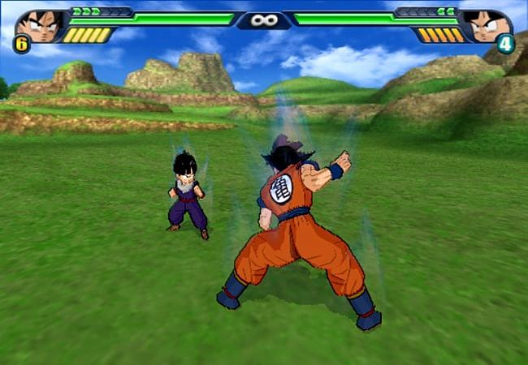
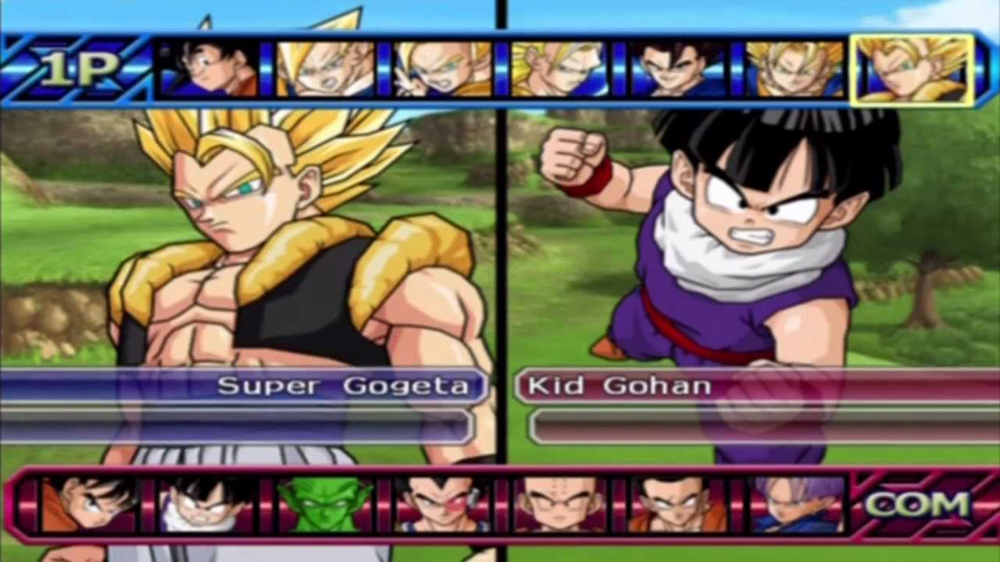

Publishing Info
- Published by: Namco Bandai Games Inc.
- Developed by: Spike Co., Ltd.
- Released: Oct, 2007
Description
Budokai Tenkaichi 3 is a 1vs1 fighting game based on the anime/manga Dragon Ball by Akira Toriyama. It includes the apocalyptic battles and the essence of the Dragon Ball series following the main story of the popular manga. As in the previous games of the series, you'll have to select your character (over 162 characters with their own movements and combos) and fight against a friend or the computer in many different game modes with many different stages and weather/time conditions.
Game Categories
- Genre: Action
- Perspective: 3rd person
- Visual: 3D
- Gameplay: Fighting
Quote
As a sendoff for the series on the PS2, I'd say this game did a pretty good job. Existing fans of the line will definitely want to pick up this very encompassing game because not only does it have pretty much everything that past versions had, but also quite a few new characters and enough new mechanics to make it worthwhile.
-- PlayStation Illustrated